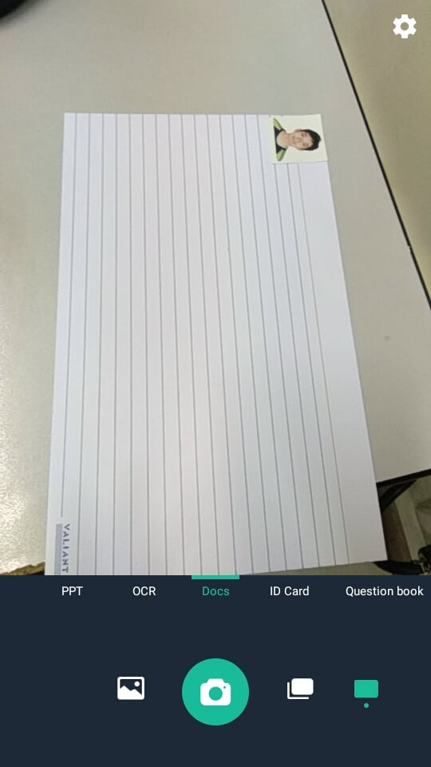

Canva
One of my favorite applications may technically not be considered an application at all, but rather an online tool for design.
It's called Canva, and it's a free program used for media design such as digital posters, infographics, flyers or even simple images. I prefer this tool over other related options because of how it gives practically everything you'll ever need even without a paid subscription. These include the following:
-An image and icon search option that offers many free and paid results
-Various templates that can give you an early start when designing
-Built-in size specifications such as those for a Facebook, Twitter or Instagram post
The only real unique things that come out of the paid subscription are the ability to resize created works into other formats as well as more premium design elements or icons. Otherwise, it's something I've been using since my first days here in APC and it's helped me through a lot of my design-related requirements!
I'm not quite sure if a desktop app already exists, but I'd be willing to take it if the option ever came through.
Sway
Another app I love is one built in with the Microsoft Office Suite, called Sway.
Just like the more commonly recognized Powerpoint, Sway allows the user to create dynamic presentations, but with a unique style. It has added features that make it more interactive compared to Powerpoint. I would say, if Powerpoint is suited to a formal presentation, Sway would be better suited as a self-presenting interactive article.
It offers advanced features for image display and animations, allowing users to import and style media. You could even make image collages or sliders that give the option to compare two images.
Another special thing with Sway is its mass-distribution methods. Being a cloud-based service, one simply needs a link to see the work, and this link could also be modified for privacy purposes. The Sway interface adapts to the user's device, conforming to any phone screen or monitor.
I must say, the UI of Sway is by far one of the most attractive I've seen, and I feel like I'm creating something genuinely worth reading whenever I'm working. I’ve only discovered it about a year ago while browsing the Office tools out of boredom, and a friend of mine recommended it. Afterwards, the app generates my link and possibly a thumbnail to use in any of my emails.
An example of one of our works can be viewed via the NavBar above.
CamScanner
For my last app, I would choose CamScanner, which is a mobile app simply for scanning documents to create PDFs. You might be wondering how it differs from simply taking a photo of a document, but CamScanner has an advanced feature which creates a frame that auto-fits the document on-screen. This makes sure that the final product has no extra space beyond the document.
Other than this, it has filtering capabilities to smoothen text and make the result more readable. Afterwards, you also have the option to send this new document to a friend, or yourself.
I’ve had the app for some time, even before coming to APC. The transition I made from textbooks to the cloud prompted me to look for something efficient and useful on the store. I use this often when a document is distributed in class, or when I'm tasked by our professor to scan a document for distribution to my peers. It does have a premium version, but I have all I need from the version I got.
